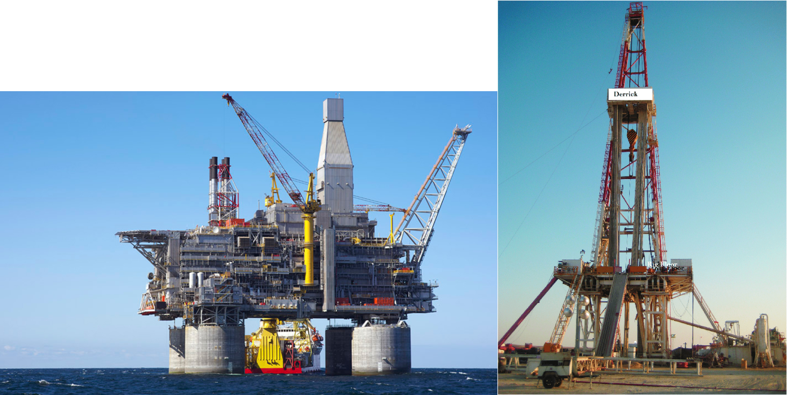
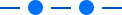

Helping Project Managers track RIGs better
Shell
May 2022 - Nov 2022
While working at Shell, I helped pivot a few key features for Wells Office users from their old tool to CWT, a better tool to manage well management projects. This case study is about the redesign of Wells Activities Sequence, a key tool well project managers at Shell use to track RIGs(large equipments used for well digging) and then make an offline request to book those RIGs for their upcoming projects. We redesigned the tool to make it easier for the PMs to track the RIGs and request to book them.
My Role
I worked as the sole product designer for the redesign and implementation of this tool. I got help from Karthikeyan(our UX Researcher), our PM team and project manager Inewari Wells.
What is CWT
CWT(Collaborative Workspace Tool) is a tool set to replace the old Wells Office interface, which allows Shell employees with different roles to digitally manage the complete process of identifying sites for digging wells to actually extracting the oil out of it.
Wells Activites Sequence is a tool that Wells Project Managers at Shell use to track different RIGs, the activities those RIGs are working on and their timelines. Once they have decided to book a RIG, they can make an offline request to book a RIG for a particular timeframe. Currently, this tool existed on the existing Wells Interface which had very basic technical capability as well as very archaic user interface.

CWT Home
What is a RIG?
A RIG is a drilling system to extract oil from land/sea. At Shell, we have different RIGs available to project managers to help with digging on their oil extraction projects. A project manager can see the activities a RiG in involved in using the Wells Activities tool and then request to book it for their project offline.

Existing Tool

Existing Wells Activities tool
Understanding our users
Our users for this tool were the wells project managers who are the overall managers for managing the digging of wells and extracting oil out of it.
They are extremely busy people managing all aspects of a project at Shell. Once the project gets to a stage where a RIG for digging has to be selected, the project managers request to book a RIG for a certain timeframe. Usually at a certain time, a project manager is handling multiple projects, so they need to constantly use the activities sequence tool to monitor the RIGs they are interested in, and then request to book them.
Gathering Research Insights
How PMs use the Activities Sequence
Most of the users generally want to track a handful of RIGs they are interested in. That’s what users mostly use this tool for.
Another use case is where the users want to see the progress for a particular activity or see the RIGs involved in a particular activity.
How frequently do you request to book RIGs?
Most project managers typically manage multiple projects at one time, so they need to request RIGs quite frequently. 2-3 times a week on average.
“I am only mostly interested in 5-6 RIGs generally, so I am mostly interested in those RIGs and their activities only.”
Most of the projects that a project manager handles are in their country of employment, therefore, for the most part, they are interested in RIGs in their country itself.
How do you request to book a RIG and at what stage of the project?
Usually, we have to estimate the dates for when we want a particular RIG for a project, although actual dates may change because of a change in schedule in a project.
Can you request multiple RIGs for the same project?
Yes, you can request to book 3 RIGs for the same project.
You can withdraw request 12 hours before the RIG is supposed to be used.
If multiple RIG requests get approved, the RIG requested first is treated as the first choice and the other RIG requests are nullified 12 hours before the RIG is supposed to be used.
Problems faced by the users
What are the problems the users are facing?
Currently, looking at the activities that a particular RIGs are involved in, is pretty difficult. It is very hard for a project manager to monitor/track the RIGs they are interested in, for a project. If I am looking to book a RIG for an upcoming project I have, currently there is no mechanism for it, I have to look at the activities for that particular RIG and seperately make a request for it. Also, tracking the RIGs themselves is not very easy. The interface is hard to use and filled with clutter especially visually.
"How can we allow project managers to easily and quickly track the RIGs they are interested in?"
Possible Solutions
What are the possible solutions to this problem?
Apart from improving the UX of the existing tool, we decide to look at solutions for holistically solving the problem of tracking the RIGs and then also booking them.
Competitive Analysis
Although we felt that the problem we had to solve was unique and tailored to very specific set of users, we decided to analyze other apps that were solving a similar problem for UI and UX inspiration.
We analysed several calendar apps including Google Calendar to gather inspiratin from.

Existing Wells Activities tool
Constraints
The project was being made using a low code platform called "Pega", so our solutions had to be as close as possible to their design system called "Cosmos". Apart from this, we were working in an Agile environment, therefore we broke down the solution and design into several parts. We followed an iterative design process with incremental improvements into the solution
KPIs to measure success
Along with the PM team, project owner and other stakeholders, we decided to establish the following KPIs to measure success for the redesign.
-
RIGs viewedHow many RIGs were being viewed by the users?
-
Time Spent:How much time were the users spending on using the tool?
-
Usage of the filters feature:What % of users were using the filters feature?
Iteration 1
While I was thinking about how to solve this problem, I realised we had already developed a design language for "Done, In Progress, Planned" tasks and were using it in the "Action Items" widget in the application. Since users were already used to this design language, we decided to leverage this for the Wells Activities Sequence tool.

Action Items Widget

Activities Design
Final Designs


Final Designs for Wells Activities
Adding the tool to the homepage

Testing the prototype
Before launching the tool to all the users, we tested it with some of our users at our Bengaluru office to see if we could . One of the key insights we received from this testing was that while some project managers did look at the past activities that a RIG was involved in(to get an idea of projects the RIG is used for), it was not very important for most of our users. Hence, we decide to reduce the visual saliency of the past activities and made sure the design focused more of the current and planned activities for the RIG.
Mockups for Updated Wells
A/B Testing
Pega offers a feature called "Timeline" using which users can automatically view an yearly/monthly/weekly view of a timeline by just zooming into the timeline, it's a native feature that Pega offers. We wanted to make use of this feature for Activities tool but were unsure whether a simple text help would be enough for users to understand that they can simply zoom in/out into the timeline to view a weekly/monthly view of the timeline. We decided to test this by testing 2 versions of the design with our users, one with the weekly/monthly/yearly tabs and one without.
We realised that the a lot of users were unable to understand the use of this feature without a tab alongside it. Therefore, we stuck to the Option A for the future.

Mockups for Updated Wells
Helping users understand the new design
While I was thinking about how to solve this problem, I realised we had already developed a design language for "Done, In Progress, Planned" tasks and were using it in the "Action Items" widget in the application. Since users were already used to this design language, we decided to leverage this for the Wells Activities Sequence tool.


Adding the Tour
Results
We were able to improve the conversion rates for all KPIs in the first iteration itself. We reduced average time spent on the tool from 4 minutes 10 seconds to 3 minutes 6 seconds.
Earlier in our tests, one things we had noticed was a lot of users would just abruptly stop using the tool after checking 1-2 RIGs telling us that they found the tool difficult to use. This improvement in time spent on the tool, along with the improvement in the number of RIGs viewed on average showed us that the users were indeed able to track the RIGs they were interested in, quickly.
Apart from this, we also observed improvement in conversion rate for the usage of the filters feature, therefore telling us that we were indeed able to make it more for visible and easy to access for the users.
Iteration 2 and Further Improvements
After gathering the feedback from the iteration 1, we decided to now move to the next iteration with more improvements. Earlier in our research, we had observed that most of our users like to check a handful of their favourite RIGs first while using the tool. Therefore we added a favourites feature to the tool allowing them to quickly check their favourite RIGs. This helped them quickly check the RIGs they were interested in instead of manually searching them and checking thier activities.


Mockups for Updated Wells
